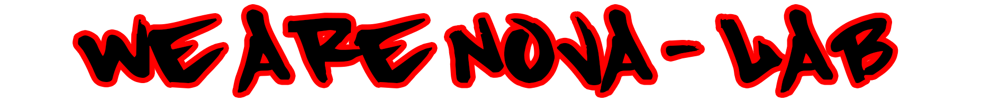

00:00:00
Se încarcă vremea locală...
Se încarcă vremea locală...

Nova Lab Bustuchin este o inițiativă creată pentru a încuraja tinerii să exploreze tehnologia, designul și inovația. Scopul proiectului este de a transforma ideile în realitate prin artă digitală, 3D, robotică și inteligență artificială.
Acest proiect a prins viață din dorința elevilor pasionați de domeniul digital de a avea un spațiu modern unde să își poată exprima creativitatea și să învețe prin practică. Cu sprijinul Primăriei Comunei Bustuchin și al Liceului Tehnologic Bustuchin, Nova Lab s-a transformat într-un loc de dezvoltare și colaborare, unde ideile devin proiecte concrete.
Programul fizic al laboratorului are loc în fiecare vineri, conform orarului școlar, dar, extra, organizăm și întâlniri online pe Discord, unde echipa poate lucra împreună de acasă.
Inițiativa a fost susținută prin voluntariat de către bibliotecarul Glăvan Gheorghe Mădălin, care, în calitate de îndrumător și mentor, a pus bazele unui spațiu educațional deschis, oferind tinerilor motivația și resursele necesare pentru a-și urma pasiunile în domeniul tehnologic.

Primăria Comunei Bustuchin

Liceul Tehnologic Bustuchin
Nova Lab Bustuchin
O echipă formată din tineri pasionați de tehnologie și inovație, coordonați de mentorul lor dedicat.

Mentor & Bibliotecar
Coordonator al proiectului Nova Lab Bustuchin, dedicat promovării educației digitale, creativității și spiritului de echipă în rândul elevilor. Dorința mea este să deschid noi drumuri pentru fiecare tânăr, să le ofer o perspectivă largă asupra modului în care funcționează lumea digitală și să îi inspir să exploreze tehnologia, designul și inovația.
Îmi propun să îi ghidez nu doar în învățare, ci și către posibilități reale de cariere profesionale, transformând ideile lor în proiecte concrete și experiențe practice.
🔗 PortofoliuElev
👨💻 Elev la Nova Lab Bustuchin, pasionat de tehnologie și robotică.
💡 Învăț programarea în Arduino IDE, C/C++ și HTML, dezvoltând proiecte care combină electronica cu logica programării.
🏆 Am participat la Nextlab.tech – etapa națională – cu robotul meu Miro9999.
🔬 Îmi place să experimentez, să descopăr tehnologii noi și să îmi perfecționez abilitățile în domeniul STEM (știință, tehnologie, inginerie și matematică).
🔗 Proiectele meleElev
Elev la Liceul Technologic Bustuchin și membru al clubului de Informatică și Creativitate. Îmi plac jocurile video în genurile sandbox, open world, metroidvania sau rhythm. De asemenea, îmi place să mă uit la anime-uri în timpul liber.
Nova Lab este primul club de informatică la care am participat și sunt foarte fericit cu activitățile pe care le-am desfășurat până acum.
🔗 Proiectele meleElevă
Elevă pasionată, membră a Clubului de Informatică Nova Lab, motivată de dorința de a ma dezvolta în domeniul informaticii și al designului 3D. Cu o curiozitate permanentă pentru tehnologie și o imaginație bogată, îmi doresc să îmbin creativitatea cu gândirea logică pentru a crea soluții inovatoare și proiecte vizuale captivante.
Particip activ la activitățile clubului, învățând constant despre programare, modelare 3D și tendințele din lumea digitală. Visează să urmeze o carieră în care să poată transforma idei în realitate prin tehnologie.
🔗 Proiectele mele
